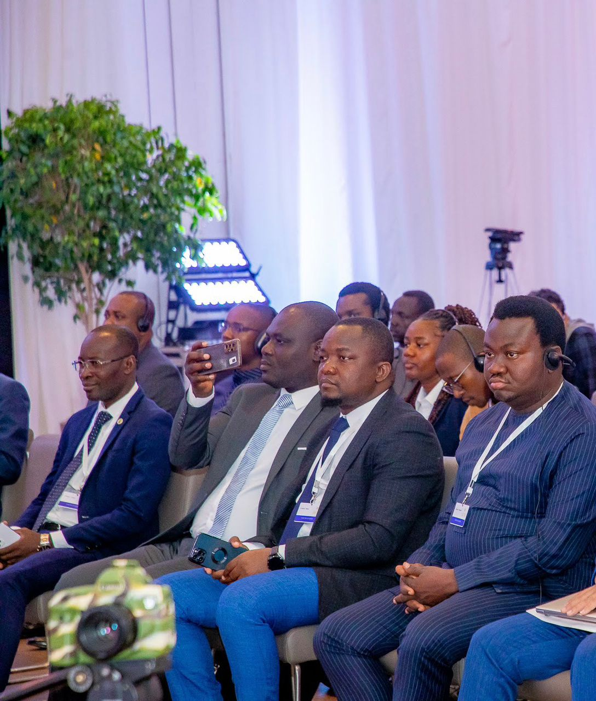

De la FNEB à la direction d'AFRICAXI, en passant par le Ministère des Sports, le CONAJEB et la Mairie de Klouékanmè — un parcours d'exception au service du Bénin et de l'Afrique.

Leader en action
Expérience professionnelle
Chronologie détaillée
2024 — à ce jour
Directeur Général — AFRICAXI 🚀
Lomé, Togo | Cotonou, Bénin (depuis mars 2026)
Direction générale et pilotage stratégique du groupe AFRICAXI dans ses différents pôles d'activités (digital, e-commerce, formation, communication, conseil et commerce général).
Supervision de l'expansion opérationnelle du groupe au Bénin et structuration de son positionnement régional en Afrique de l'Ouest
Conception et mise en œuvre de solutions de transformation digitale appliquées aux économies locales
Pilotage d'un programme de digitalisation des marchés traditionnels
Encadrement des équipes et développement de partenariats techniques et commerciaux
Janv. 2022 — Déc. 2024
Coordonnateur National — Programme de Promotion de l'Entrepreneuriat des Jeunes (PPEJ) 🎯
CONFEJES & État Béninois
Programme financé par la Conférence des Ministres de la Jeunesse et des Sports de la Francophonie
Coordination générale et pilotage stratégique du programme de promotion de l'entrepreneuriat des jeunes
Mise en œuvre des activités d'accompagnement à la création et au développement d'entreprises (formation, coaching, suivi)
Encadrement de jeunes porteurs de projets et appui à la structuration de leurs initiatives économiques
Gestion des relations avec les partenaires institutionnels et techniques
Suivi-évaluation des activités, reporting et gestion des résultats du programme
Contribution aux politiques publiques de promotion de l'emploi et de l'auto-emploi des jeunes
Juin 2021 — à ce jour
Président du CONAJEB & Point Focal UPJ/Bénin 🌍
Conseil National des Jeunes Élus du Bénin
Coordination nationale des jeunes élus locaux et représentation institutionnelle auprès des autorités et partenaires techniques
Participation à plus de 20 missions internationales sur la gouvernance, la décentralisation et les politiques de jeunesse
Représentation du Bénin dans des cadres internationaux liés à la jeunesse et au développement local (ONU, CEA, Union Africaine)
Animation de réseaux de jeunes élus et renforcement des capacités en leadership et gouvernance territoriale
Févr. 2021 — Sept. 2023
Assistant du Ministre des Sports du Bénin 🏆
Gouvernement du Bénin — Cotonou
Participation aux réunions stratégiques du ministère et contribution aux orientations opérationnelles des programmes nationaux
Rédaction de communications institutionnelles, notes techniques et documents stratégiques
Supervision des programmes nationaux de développement du sport (classes sportives, championnats scolaires et jeux universitaires)
Coordination par intérim du Championnat du Monde de Pétanque organisé au Bénin — performances historiques de l'équipe nationale (champion et vice-champion dans deux catégories)
Mai 2020 — Janv. 2026
Conseiller Communal 🏛️
Commune de Klouékanmè — Couffo
Président de la Commission des Affaires Économiques et Financières · Président de la Commission Coopération et Relations avec les Institutions · Membre du Conseil Départemental de Concertation et de Coordination du Couffo.
Participation à la gouvernance et aux décisions stratégiques de la commune
Supervision des finances locales et contribution à l'orientation du budget communal
Contribution au développement économique local à travers les filières agricoles et commerciales
Renforcement des partenariats institutionnels et de la coopération pour le développement communal
2017 — 2020
Directeur Général — Radio COUFFO FM 🎙️
Adjahonmey, Klouékanmè
Management d'une équipe de 22 journalistes et personnels techniques
Supervision de la ligne éditoriale, des programmes et des activités de diffusion
Signature et exécution de plus de 150 contrats de communication et de partenariat
Initiation et organisation de forums radiophoniques de sensibilisation et de débat public
2019
Promoteur & Directeur Général — AFRI-COM CONSULTING 📣
Bénin
Création et direction d'une agence de communication institutionnelle, production de supports et prestations intellectuelles
Conception et mise en œuvre de campagnes de communication pour des institutions publiques et organisations internationales
Exécution de contrats de communication et de consultance avec des ministères et partenaires techniques (dont la GIZ)
Gestion et administration — 8 employés
2014 — 2016
Chargé des Multimédias & Réseaux Sociaux 📱
Ministère de la Communication et des TIC — Bénin
Gestion et animation des plateformes numériques et réseaux sociaux institutionnels du ministère
Contribution à la stratégie de communication digitale gouvernementale
Production et diffusion de contenus multimédias institutionnels
Participation à la modernisation de la communication institutionnelle via les outils numériques
Janv. 2013 — Juin 2015
Assistant — Projets Humanitaires 🤲
Caritas Bénin
Appui à la conception, analyse et mise en œuvre de projets humanitaires et sociaux
Coordination des interventions d'urgence — inondations au Bénin (2013)
Mobilisation de ressources pour le financement des actions d'assistance aux populations vulnérables
Contribution à la rédaction de rapports d'exécution, de suivi et d'évaluation des projets
Janv. 2012 — Juin 2012
Stagiaire — Direction Générale des Politiques de Développement 📊
Ministère du Développement et du Plan — Bénin
Analyse et élaboration des politiques publiques de développement, suivi de la Stratégie de Croissance pour la Réduction de la Pauvreté (SCRP 2011-2015).
Juil. 2009 — Juin 2012
Responsable Étudiant — FNEB 🎓
Fédération Nationale des Étudiants du Bénin
Évolution progressive de responsabilités, du bureau d'union d'entités au Conseil central fédéral
Point focal à l'Université d'Abomey-Calavi pour le Forum social mondial de Dakar 2011
Coordination et encadrement d'une délégation de 25 étudiants
Atouts
Compétences & Langues
Compétences transversales
Management de projets internationauxGouvernance participativeTransformation digitaleEngagement civique jeunessePolitiques publiquesMobilisation de ressourcesCoopération internationaleCommunication institutionnelleLeadership & ManagementFinance localeEntrepreneuriatSuivi-évaluation
Langues maîtrisées
Français
Natif
Anglais
Courant
Fon
Courant
Adja
Courant
Mina / Goun
Bon niveau
Aller plus loin
Découvrez mes engagements 📸
Consultez la galerie ou contactez-moi directement.